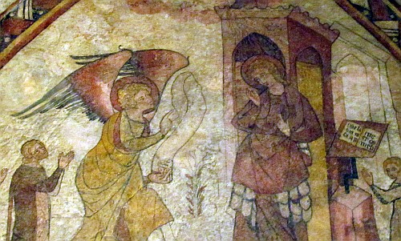
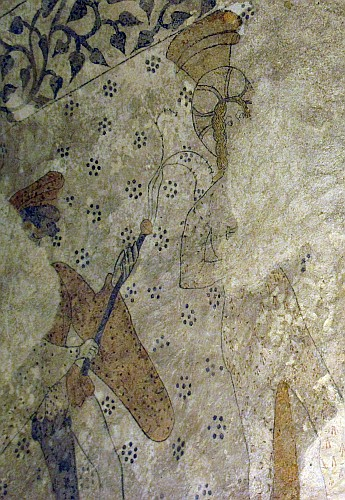

Dans la Baie d'Saint Brélade, au ras d'l'Églyise Pârouaîssiale, y'a un sîmpl'ye vièr bâtisse. Ch'est la Chapelle ès Pêtcheurs.
Chu bâtisse est tout ancien, mais i' n'y'a pon d'mention êcrite d'la chapelle d'vant 1817, mais ou 'tait cèrtainement parmi les chapelles dans l'Île tchi fûtent supprînmées à la R'formâtion. Probabliément lé site d'la chapelle 'tait l'assiette originnale dé l'églyise, tchi fut r'bâtie pus tard. La chapelle fut r'bâtie en pièrre. À chu temps-là la chapelle 'tait dêdiée à un saint, mais j'n'avons pon d'èrcord d'eune dêdicâtion et avaû l'temps la chapelle vînt connue coumme la Chapelle ès Pêtcheurs, ouaithe qu'i' n'y'ait pon d'trace d'autcheune décothâtion à thème mathitînme. Tout coumme y'a bein la pôssibilité qu'la chapelle avait 'té eune fais dêdiée à Sainte Mathie. La peindrie d'muthâle tchi r'présente l'Annonch'chie pouôrrait bein pèrsuader ainchîn.
Ch'est probabl'ye qué la chapelle fut adoptée au quatorzième siècl'ye par eune fanmil'ye tchi la faîthait sèrvi coumme eune chapelle dêdiée à la dithie d'mêsses pouor les âmes et à l'entèrrement des membres d'la fanmil'ye. Les caractéthes agenouoillis peints sus les muthâles donnent à craithe qué ch'est chutte fanmil'ye; chutte peindrie date du quatorzième siècl'ye.
Au tchînzième siècl'ye, acouo des portraits fûtent grées sus les muthâles et l'pliafond. À chu temps-là lé porta fut r'grée et les f'nêt's agrandies. Ch'est possibl'ye qu'la chapelle avait pâssé entre les mains d'eune aut' fanmil'ye. Nou-s-abaîssit l'plianchais étout. Si ch'tait pouor faithe lé d'dans d'la chapelle pus haute à seule fîn d'apprêcier mus la peindrie du pliafond, ou pouor clièrgi l's entèrrements tch'înfectaient, sans doute, la chapelle, nou-s-a à d'vinner.
À la R'formâtion, les chapelles fûtent freunmées. Pouor 1549 i' n'y'avait d'aut' dé sèrvices dans la chapelle, et bétôt l's alentours fûtent fortifiés pouor la d'fense dé l'Île. Eune batt'tie fut construite, et dans les années 1550s la chapelle fut changi en arséna pouor stôrrer l'canon d'la pâraisse, les portes étant r'grées pouor aîdgi l'entréthie et la sortithie des canons.
S'lon les dêfouithies archéologiques nou sait qu'au dgiêx-huitchième siècl'ye la chapelle sèrvit d'fond'die d'clioche (tout coumme la clioche d'achteu d'l'Église dé Saint Brélade date raîque dé 1883). En 1844 les Êtats d'Jèrri ouvrîtent des nouvieaux arsénaux et nou n'stôrrait d'aut' les meunnitions et les canons ès Églyise Pârouaîssiales. La Chapelle ès Pêtcheurs d'vînt aut'chose: eune tchèrpent'tie, un solyi à fain, eune aître à bouais.
Lé bâtisse fut restauré en 1883 et vînt fait sèrvi coumme salle dé rêunnions pouor l's Assembliée d'Pâraisse. Auprès 1915 acouo d'la restaurâtion fut entanmée; v'là tch'avraûnit malheutheusement eune partie d'la peindrie quand du pliâtre fut halé des muthâles.
 Un trembliément d'tèrre en 1926 cratchit l'bâtisse du lief à l'aithe. Des r'pathes quémenchîtent et douochement les travaux r'mîntent lé caractéthe ecclésiastique d'la chapelle, auve un auté r'gângni dg'iun des pièrres d'auté d'Églyises Pârouaîssiales tch'avaient 'té halées à la R'formâtion et envyées au Vièr Châté. Chutte pièrre sèrvait au Châté coumme eune couvèrtuthe dé pits et fut transporté à la Chapelle ès Pêtcheurs en 1929.
Un trembliément d'tèrre en 1926 cratchit l'bâtisse du lief à l'aithe. Des r'pathes quémenchîtent et douochement les travaux r'mîntent lé caractéthe ecclésiastique d'la chapelle, auve un auté r'gângni dg'iun des pièrres d'auté d'Églyises Pârouaîssiales tch'avaient 'té halées à la R'formâtion et envyées au Vièr Châté. Chutte pièrre sèrvait au Châté coumme eune couvèrtuthe dé pits et fut transporté à la Chapelle ès Pêtcheurs en 1929.
Dans les 1914-1915 l'artiste Henri Thomas Bosdet avait grée des designs pouor des vèrrinnes. À la fîn en 1930, la siette dé vèrrinnes 'tait prête. À chu temps-là nou-s-identifiait Saint Brélade auve lé saint Irlandais, Brendan lé Viageux. Y'a "Saint Brendan en viage", eune vèrrinne dé Saint Brélade sus l'Île ès Ouaîthieaux, et "La Jannèche dé Saint Brélade". I' soulait y'aver étout eune vèrrinne dé l'arrivée d'Saint Brendan en Jèrri et ieune des Saints Pièrre et André - ches deux fûtent halées en 1987. Les travaux fûtent ag'vés en 1935 et la chapelle fut r'dêdiée l'22 d'Septembre par l'Êvêque dé Ouînchêtre.
Ès années 1970s nou fit ses rapports sus l'êtat d'la chapelle et d'ses peintuthes. La consèrvâtion fut entréprînse entre 1982-1985 et des dêfouithies archéologiques dêmuchîtent acouo d'l'histouaithe du site. La chapelle èrchut un neu lief, d'l'èrpavage en grannit, d'l'èrmeubliéthie et nou finnit tout pouor Pâques 1988.
Au jour d'aniet y'a bein des vîsiteurs tch'y veinnent à seule fîn d'vaie les peindries d'muthâle du Mouoyen Âge, tchi sont d'tchi rare en Jèrri (il en reste autrément raîque à l'Églyise Pârouaîssiale dé Saint Cliément et à la Hougue Bie). À la R'formâtion les décothâtions des églyises et chapelles fûtent passecrites ou muchies atout eune couoche dé lait d'caux. Lé fait qu'la Chapelle ès Pêtcheurs fut transformée en arséna épis néglyigie veurt dithe qué si les peindries avaient 'té couèrtes dé lait d'caux, il' avaient 'té oubliées pendant longtemps, et quand bein pus tard les décothâtions èrquémenchaient à r'pathaître dans un bâtisse tchi n'tait d'aut' eune pliaiche consacrée, lé monde n'en 'taient pon gênés. Pouor lé c'menchement du dgiêx-neuvième siècl'ye quand les preunmié descriptions d'la chapelle fûtent êcrites, des parties d'la peindrie r'taient vîsibl'yes. En 1859 les preunmié illustrâtions d'eune partie d'la peindrie fûtent publiées.
Nou-s-a identifié deux difféthents séthies d'peindrie: au quatorzième siècl'ye et au tchînzième.
Parmi les preunmié scènes du quatorzième siècle, y'a: l'Annonch'chie sus la muthâle dé l'Êst et en partie par l'Nord et l'Sud; des buts d'saints et d'pliantes.

Parmi les scènes tch'ensiêthîtent au tchînzième siècl'ye: la Tchête dé l'Houmme (au Sud) et la Vie d'Jésû-Chri (au Nord); la Dreine Jug'gie (sus la muthâle du Vouêt). Sus la muthâle dé l'Êst nou r'mèrtchit, duthant eune restaurâtion, l's êqu'sîns d'eune Vièrge auve lé Mousse, mais v'là tchi fûtent halés pouor dêmuchis l'Annonch'chie. La séthie du Vièr Testament, au Sud, mouontre: Âdam et Êve; la Tchête dé l'Houmme; et probabliément la Renvyéthie d'Âdam et d'Êve hors du Paradis. La séthie du Nouvieau Testament, au Nord, est mus prêsèrvée: l'Annonch'chie (auve l'archange Gabrié tout à plieunmes); l'Adouothâtion d's Hoummes Avisés; la Machacréthie d's Înnouothants; eune scène non-identifiabl'ye; l'Entréthie dans Jéthusalem; acouo des scènes non-identifiabl'yes; la Fouôt'tie; la Portéthie d'la Crouaix; la Cliouethie d'Christ à la Crouaix; la Crucifixion.
Dans la Dreine Jug'gie sus la muthâle du Vouêt, nou vait l'Christ coumme Juge et pus d'eune vîngtaine dé p'tites pèrsonnes tchi lus dêhalent d'lus côffres, en priant. Deux anges soûffl'yent des trompettes. Ch'est sans doutes les beinheutheurs tch'ont 'té souôl'vés; nou n'vait pon d'condâmnés dans l'portrait.
Viyiz étout: